14:42低层外墙平台附近出现最早火光，绿网与树影让火点并不显眼。
14:50有人拨打999，报警已经发出，但楼内警报没有同步抵达每一户。
14:50后烟开始抬升，低层外墙的异常逐渐变成楼上住户可感知的危险。
14:55宏昌阁楼梯与走廊进烟，原本应带人离开的通道开始变得陌生。
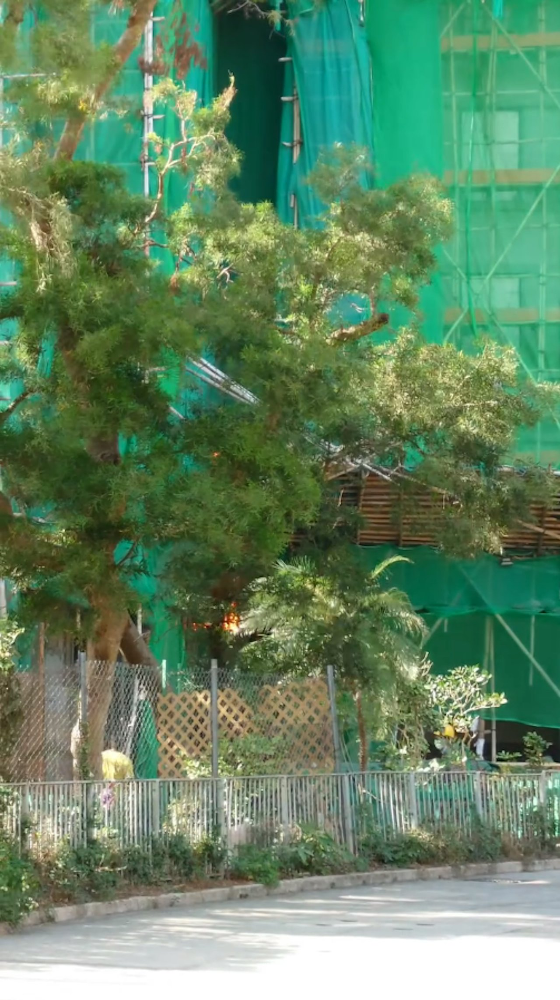
背景图片：China Daily Hong Kong，2025年11月26日现场照片。
从光井里的一点火星，到七座大楼相继沦陷——
命运只用了不到九十分钟，就被彻底改写
14:42低层外墙平台附近出现最早火光，绿网与树影让火点并不显眼。
14:50有人拨打999，报警已经发出，但楼内警报没有同步抵达每一户。
14:50后烟开始抬升，低层外墙的异常逐渐变成楼上住户可感知的危险。
14:55宏昌阁楼梯与走廊进烟，原本应带人离开的通道开始变得陌生。

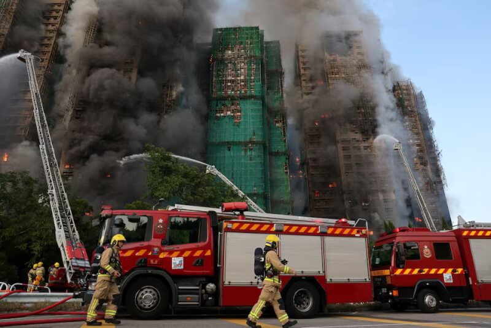
14:56火沿光井和外墙急速上窜，脚手架、棚网和围护物把立面串成燃烧路径。
15:01首批消防车陆续抵达，楼下开始进入大规模救援状态。
15:02火警升为三级，火已经不是一处窗口和一段棚架的问题。
15:14烟气散到宏泰阁楼梯与走廊，高层住户的逃生路线开始被污染。
15:34火警升为四级，灭火和搜救同时承压。
16:048座楼中已有7座起火，一个低层火点扩成群楼火场。
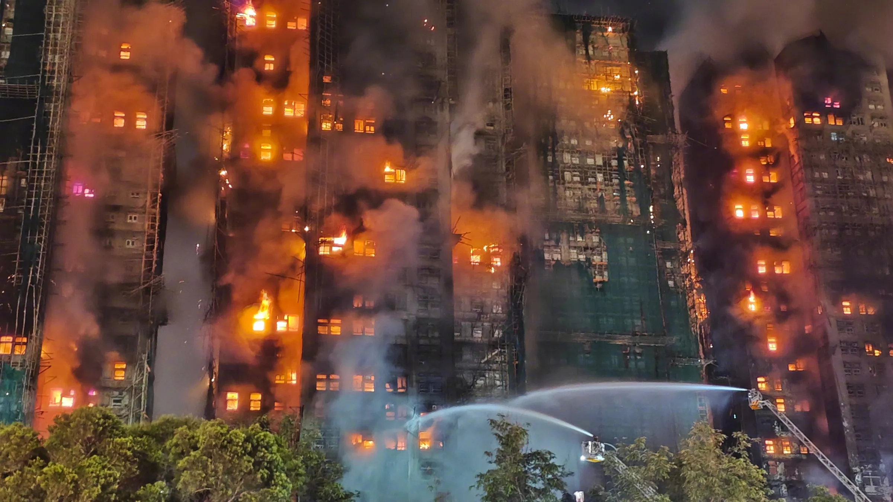

18:22火警升为五级。天色变暗，窗口火光更刺眼，现场已经越过普通楼宇火警的边界。
22:30现场已投入989名消防员、174辆消防车和47辆救护车，救援延续到翌日。

Event Summary
宏福苑，一座建于1983年的老屋苑，在2025年11月26日这个下午，成为香港七十七年来死亡人数最多的一场火灾现场。
宏福苑是一个高龄化居住社区。香港01引述2021年人口普查指出，屋苑有逾4600名居民，其中约1700人为65岁或以上长者。火灾后，独立委员会确认有7座楼受影响，4000名居民流离失所。
换句话说，这不只是一起“单栋建筑失火”事件，而是一场在高密度住宅群中迅速跨楼蔓延、并在数分钟内压缩逃生窗口的系统性灾难。


灰烬之下，是一个个曾经鲜活的名字——168条生命，79处伤痕，7座在数小时内相继沦陷的家园
Casualties
悬停扇区可查看身份与比例。
Age structure
多数遇难者为65岁及以上长者。
900+ 人进入临时庇护中心
Failures
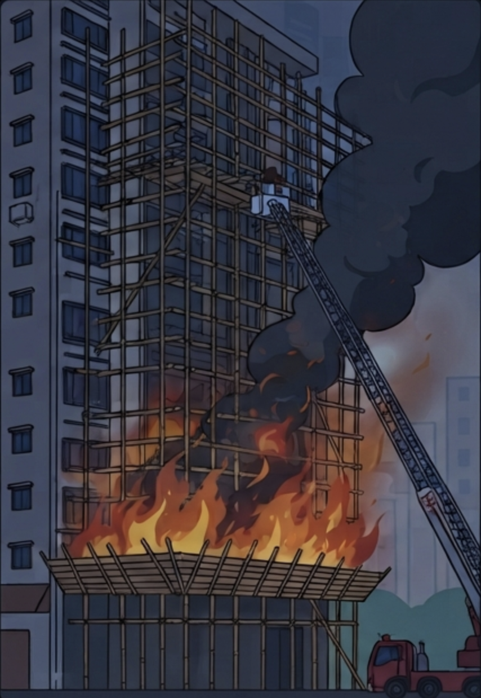
原本为维修而搭起的竹棚架、木板和围护材料，在火场里把一层层外墙连成燃烧通道，也让云梯和外部破拆难以贴近核心火点。
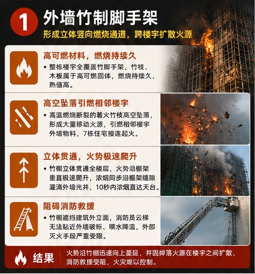
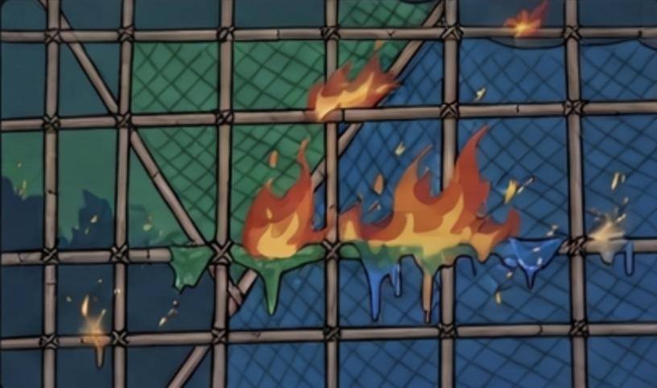
当部分棚网无法自熄，火就不会停在最初的破口；它会沿着网面继续寻找下一个可燃边缘，把小火点变成连续火线。
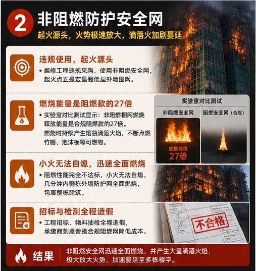
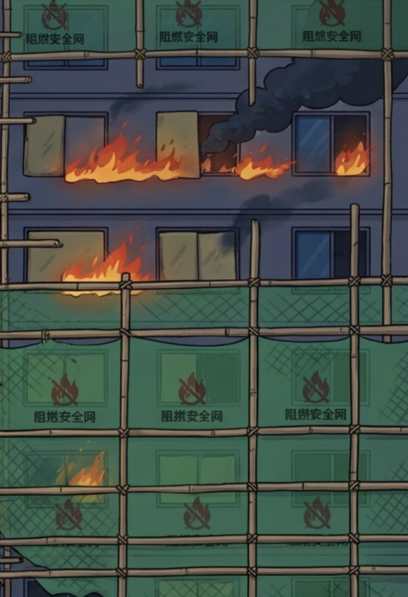
贴近窗边的可燃泡沫板让火势更容易横向游走，也可能遮住住户对外部火情的判断，让危险在窗外逼近时更难被看见。
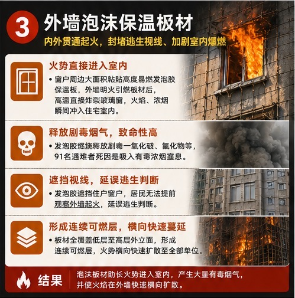
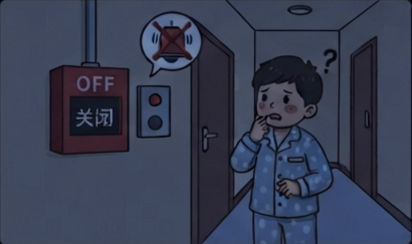
8座楼中有7座火警系统被关闭。警报没有同步抵达每一层，住户只能靠烟味、呼喊和窗外火光拼凑判断。
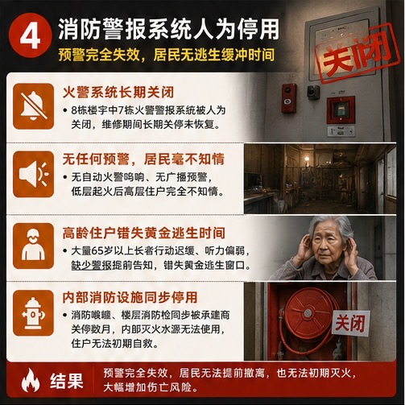
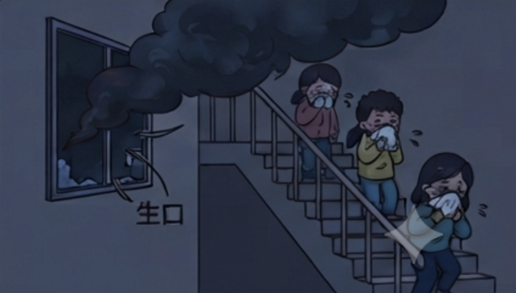
楼梯窗户被临时拆开形成“生口”后，浓烟可直接灌入楼梯间。原本最该保护人的垂直逃生路径，反而变成一条被烟污染的通道。
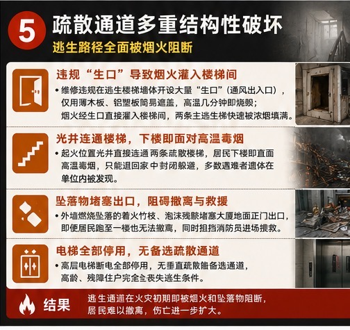
Impact
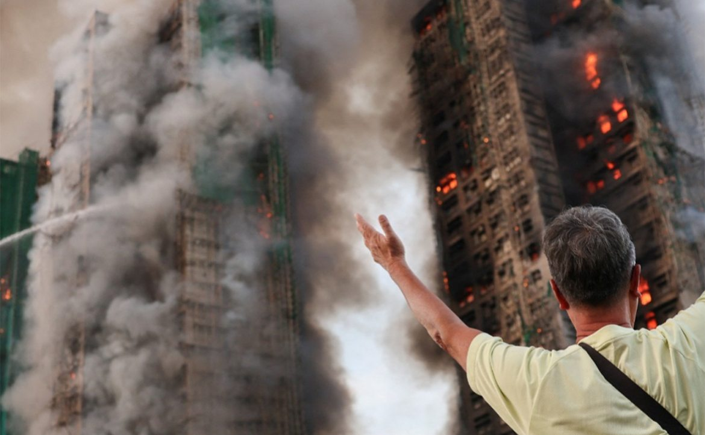
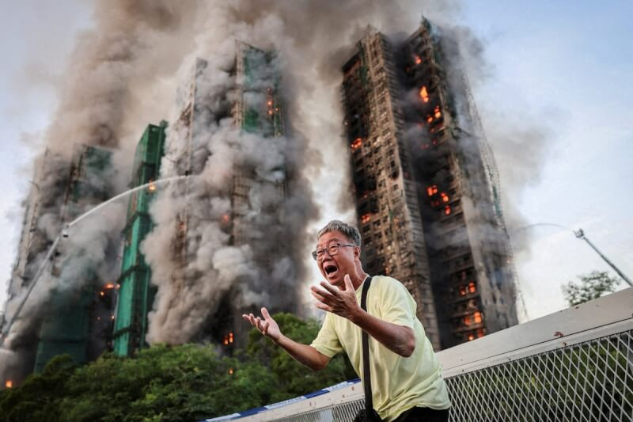
当居民站在楼下，看着熟悉的楼座被浓烟和火光包围，受灾对象就不再只是个别单位，而是整座社区里的老人、家庭、救援人员与日常秩序。
图片来源：路透社。约4000名居民在火灾后离开住所。对一个以自住家庭为主的居屋社区而言，失去的不是一串楼宇编号，而是证件、药物、相片、积蓄和每天碰面的邻里网络。
宏福苑本身就是长者比例偏高的社区。对高龄住户来说，电梯、熟悉的楼层动线和及时警报不是便利，而是逃生条件；一旦楼梯进烟，选择会被迅速压缩。
消防员面对的不是一户室内明火，而是多栋外墙同时燃烧、脚手架持续坠落、室内外浓烟交织的复合火场。到当晚22:30，现场已投入989名消防员。
37岁，隶属沙田消防局，服务消防处9年；公开逝者资料列于宏泰阁27楼。
图片来源：文汇报。火被扑灭之后，许多家庭才进入另一段漫长等待：身份确认、临时安置、后续调查、司法程序和创伤修复，都不会随着火光熄灭而结束。
Memorial Figure 01
公开逝者页面上的每一张卡片，在这里被转译成一盏微光。灯墙保留168名逝者记录，宠物记录另列；点击灯点可查看公开资料中已有的称谓、位置与年龄信息。
点击一盏灯查看公开页面中已有的重点信息。
Memorial Figure 02
留言不是背景噪音，而是灾后仍在继续的公共记忆。每一条横向波形代表一则公开留言，长度来自字数，颜色与起伏回应留言的密度和情绪。
滑过或点击一条声纹查看留言。
Rarity
香港的火灾史长达一个多世纪；而宏福苑，注定要被写进这份名单的最前列——一个七十七年未被打破的位置
Historic comparison
它的罕见，不只在死亡人数，更在于它像多宗世界标志性住宅大火一样，把可燃外立面、逃生路径失守、预警不足和监管裂缝同时暴露出来。

伤亡人数：至少58人死亡，70多人受伤。
起火原因：公开调查指无证焊工施工火花引燃脚手架等外围材料。
事件概括：2010年11月15日下午，上海静安区胶州路一栋正在进行节能改造的高层住宅起火。火焰先在脚手架、尼龙网和外墙包覆材料之间扩大，随后沿楼体外立面快速向上蔓延，大量浓烟灌入住户楼层。消防救援持续至当晚，明火在数小时后被扑灭，但高层垂直蔓延、施工材料可燃和疏散受阻已造成严重伤亡。

伤亡人数：72人死亡，70多人受伤。
起火原因：火源来自住户冰箱电气故障，火势迅速扩大与可燃外墙包层及保温材料高度相关。
事件概括：2017年6月14日凌晨，Grenfell Tower 一户住宅内的冰箱起火，火势突破窗户后点燃外墙包层系统，并在数分钟内沿建筑四面向上扩散。火灾从凌晨持续到白天，消防员在极端高温、浓烟和高层搜救压力下逐层进入，明火虽逐步受控，但整栋楼在长时间燃烧后严重损毁，灾难最终推动英国对外墙材料、监管和住户警报制度进行长期调查。

伤亡人数：17人死亡，44人受伤。
起火原因：电暖器引发火灾，失效的自闭门让浓烟经楼梯间扩散。
事件概括：2022年1月9日上午，Bronx Twin Parks North West 公寓一户单位因电暖器起火。火焰主要停留在起火单位及附近区域，但单位门和楼梯间防烟门未能有效关闭，浓烟迅速进入公共走廊和楼梯间。消防员到场后约一小时内控制明火，但烟气已经在高层住宅内部形成致命扩散，许多死伤并非直接来自火焰，而是来自吸入浓烟。
Global Parallels
从2010年上海静安高层火灾，到2017年伦敦 Grenfell Tower 火灾，再到2022年纽约 Bronx 公寓火灾，最致命的往往不是最初火点，而是建筑材料、烟气路径和延迟反应共同放大的后果。
Shared Pattern
共通风险很清楚：可燃外层或脚手架把立面变成燃烧带，楼梯或走廊失去防烟功能，居民在警报不足时难以及时判断，而高密度居住让小失误迅速演变成集体灾难。
Public Lesson
城市防火不能只靠事后救援，更要在施工材料、外墙改造、报警系统、闭门装置、长者疏散与监管追责上把风险提前切断。
Public meaning
真正进入公众视野的，不只是火怎么烧起来，而是灾后几千名居民如何被安置，以及责任最终能否追到具体的人、公司和制度
这场火灾之所以成为公共议题，是因为它留下了两条仍在延伸的线：一条是居民与受灾单位如何从紧急安置走到长远重建，另一条是从工程招标、材料安全到消防系统失效，责任如何一层层被查出来。
Residents & Homes
火灾后的问题不是“有没有救助”而已，而是数千名居民怎样从临时落脚，走到能否返回单位收拾、再走到长远住屋和业权安排。
火警当晚先开放社区会堂，随后把居民分流到酒店、营舍、青年旅舍及过渡性房屋。
部分居民转往过渡性房屋或宝田中转屋；2026年4月20日至5月4日及5月21日至5月29日，政府两度安排住户上楼收拾物品。
A至G座进入收购安排，业主可选现金或楼换楼，未补价单位每平方呎8,000元，已补价单位每平方呎10,500元。
未见宏福苑灾民专属租金表；公开规则以可负担原则为主。
可较稳妥理解为沿用中转房屋低收费体系。
焦点不在能否回去，而在时间、体力与尊严感都不够。
焦点预料放在共用部分管理、财务、保险、合约及大维修余款等善后事项，而不是逐户私人出售的最终拍板。
居民仍要在现金收购、楼换楼、是否接受现有方案，以及宏志阁是否纳入之间继续权衡。
Accountability
公众真正关心的，是这场火为何会从维修工地演变成群楼灾难，以及责任有没有停留在抽象的“系统问题”，还是落实到人、公司和监管机制。
7名个人、2间公司、25项控罪，案件从工程事故升级为刑事问责。
承建商与顾问被指隐瞒纪录、虚报评分，左右大维修工程招标结果。
不符防火标准棚网、帆布和可燃泡沫板，把外墙变成火势传播路径。
不必要工程加上错误操作，令火警钟与喷淋系统在关键时刻同时失效。
承建商与顾问被指隐瞒纪录、虚报评分，左右这宗逾3亿港元的大维修工程。
不符防火标准的棚网、帆布和可燃泡沫板，连同外墙施工做法，把立面变成火势传播路径。
不必要工程加上错误操作，令警报及喷淋系统在最关键时刻未能发挥作用。
大维修楼宇被检查。
工地拆网，相关承建商其他工程被暂停。
公众开始追问承建商资格审查、维修监理独立性、消防停用机制，以及老旧屋苑大维修监管是否失灵。
而是一次对楼宇维修、消防与问责制度的压力测试。
在页面的尾声，我们真诚地希望，宏福苑大火不应只停留在伤亡数字里。真正需要被持续追问的，是受灾居民最终得到的安置和补偿是否合理，事件调查走到哪一步，政府与承建链条的追责是否落实，最初火源和火势扩散机制是否被公开说明，以及下一次大维修、下一座高龄屋苑，能否在材料、警报、逃生通道和监管上提前切断同样的风险。愿逝者安息，也愿所有受灾者早日走出苦难，重新回到被尊严与安全守护的生活。